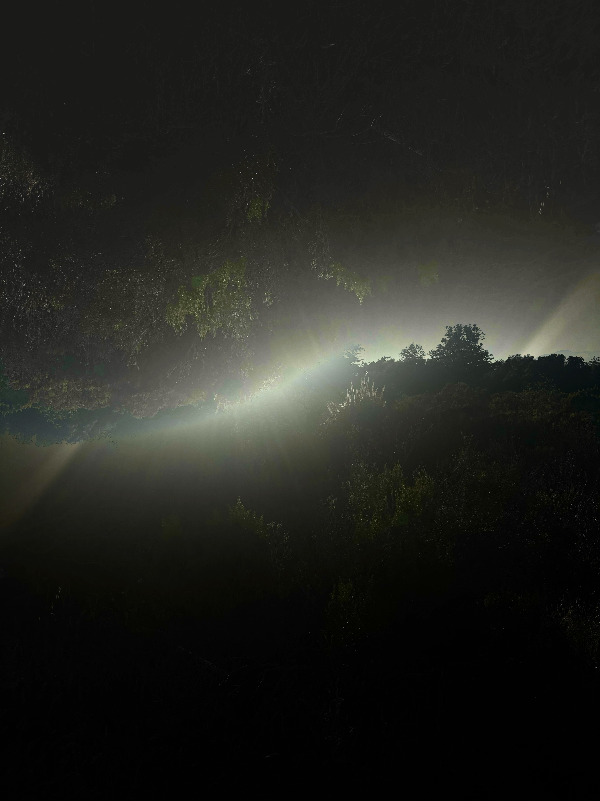

Life Flows
At Summer's brink, I found myself in the consistent search for purpose in every aspect of my life & things began to feel like I was trudging the muddy minutes. Enrollment in design courses taught me that not everything requires intention or purpose & that it can be confining to the creative process. This project began shortly after my first design course in Summer 2025 where I immersed myself in the blanketing chapparal that surround my apartment complex. The images I staged appeared comfortable & familiar , although I wondered what it would be like if nature exhibited it's edge more visbily & in an unfamiliar manner. My project involved mirrored images, distortive editing tools, and even combination of photos that were not of the main composite.

Hyphaeic

Elements of Life

Distant Relations
Biodata